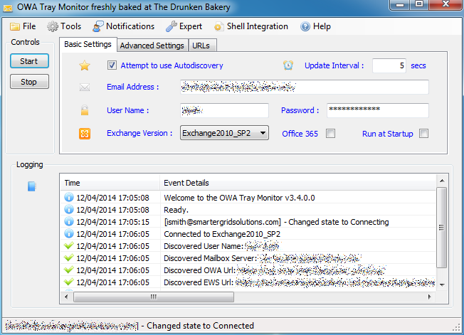

Your Exchange inbox, right in the tray
OWAtray watches an on-premises Exchange mailbox and lets you know about new mail and upcoming appointments without running Outlook — and hands off "send via MAPI" requests from other apps straight to Outlook Web Access.
What it does
A quiet, always-on watcher for your mailbox
Sits in the tray, polls Exchange, and tells you what changed — nothing more.
Unread mail at a glance
Polls your inbox over Exchange Web Services on a configurable interval and shows the unread count and new-mail details as they arrive.
Calendar reminders
Polls your calendar too, popping a reminder before upcoming appointments so you don't need Outlook open to catch them.
Modern tray notifications
The native Windows tray balloon — which the OS itself renders as a modern Action Center toast on Windows 10/11 — plus an optional audible alert.
MAPI hand-off
Registers as a Simple MAPI provider — "Send to Mail Recipient" and similar actions from other Windows apps open a compose window in OWA instead of needing Outlook installed.
Autodiscovery
Finds your EWS service URL and OWA URL from just an email address, with manual overrides for non-standard servers or split-DNS setups.
11 languages
Localized into English, German, Italian, Turkish, Catalan, Macedonian, Russian, Polish, French, Spanish and Czech, by volunteer translators.
Compatibility
Built for on-premises Exchange
OWAtray talks to Exchange over classic EWS with a username and password. Here's what that does and doesn't cover today.
compatibility.diff
+
On-premises Exchange, 2007 SP1 through Exchange 2019 and Server SE, via Basic Auth EWS
The version dropdown covers every release below — pick the closest match, or leave it on autodetect.
2007 SP1
2010 / SP1 / SP2 / SP3
2013 / SP1
2016
2019
Server SE
+
Autodiscovery or manual EWS/OWA URL configuration
Works with split-DNS and non-standard internal URLs too.
+
Domain or non-domain machines, with an optional web proxy
−
Exchange Online / Microsoft 365
Microsoft disabled EWS Basic Authentication for most tenants in October 2022. OWAtray only speaks Basic Auth, so it can't reach a modern Microsoft 365 mailbox until OAuth ("Modern Auth") support is added.
−
macOS / Linux
Windows-only WinForms application with a native COM component.
−
Official support
Freeware, community-maintained — no SLA or guaranteed response.
// a note on legacy status
This is legacy software, offered as-is
OWAtray's core dates back to 2009 and still targets .NET Framework 4.0. It works, and it's actively kept building and lint-clean, but it isn't built with modern security or authentication practices in mind.
- No warranty, no SLA — used entirely at your own risk.
- Freeware — free to use, including at work, but not for resale or bundling into a commercial product.
- Passwords are protected with the OS's per-user data protection API, not a modern secrets vault.
- Best-effort maintenance — issues and pull requests are welcome on GitHub, with no guaranteed turnaround.
If that trade-off works for your on-premises Exchange setup, it's a small, focused tool that does one job well.
A look inside
Screenshots
The main window, mid-connection — and a new-mail notification landing in the corner.

v3.4.0.0 — via the Internet Archive
Get OWAtray
Download the installer from GitHub Releases. It installs per-user — no admin rights needed.
Download for Windows
Windows 7 or later
.NET Framework 4.0
On-prem Exchange 2007 SP1–2019/SE with EWS enabled